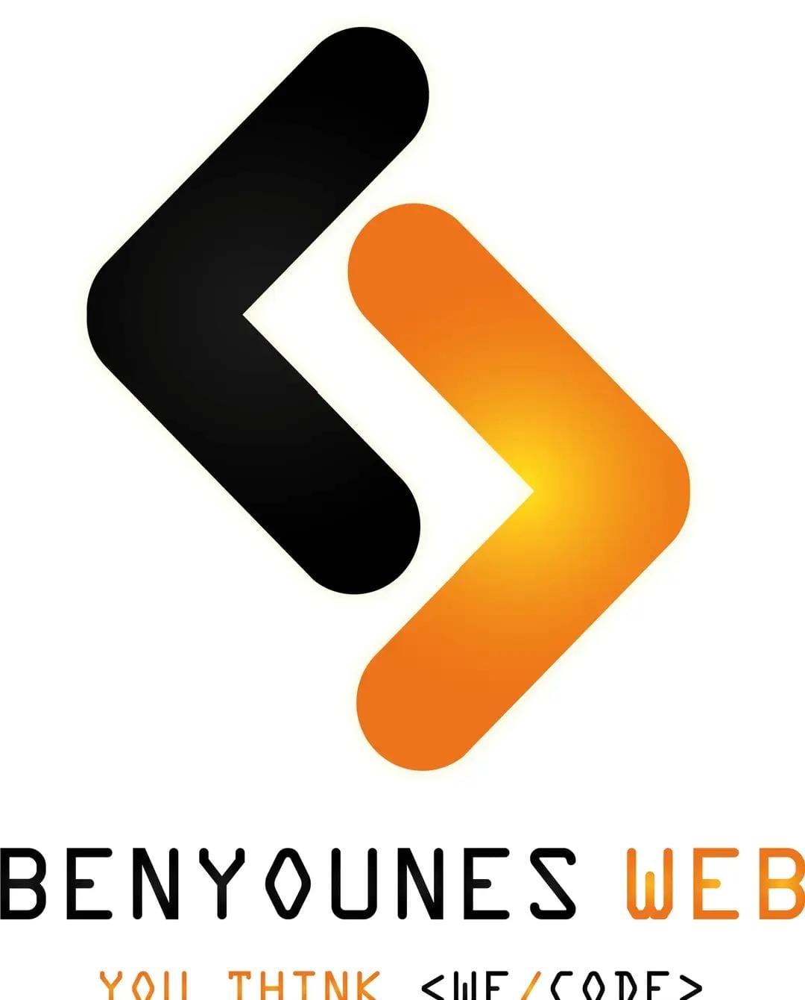
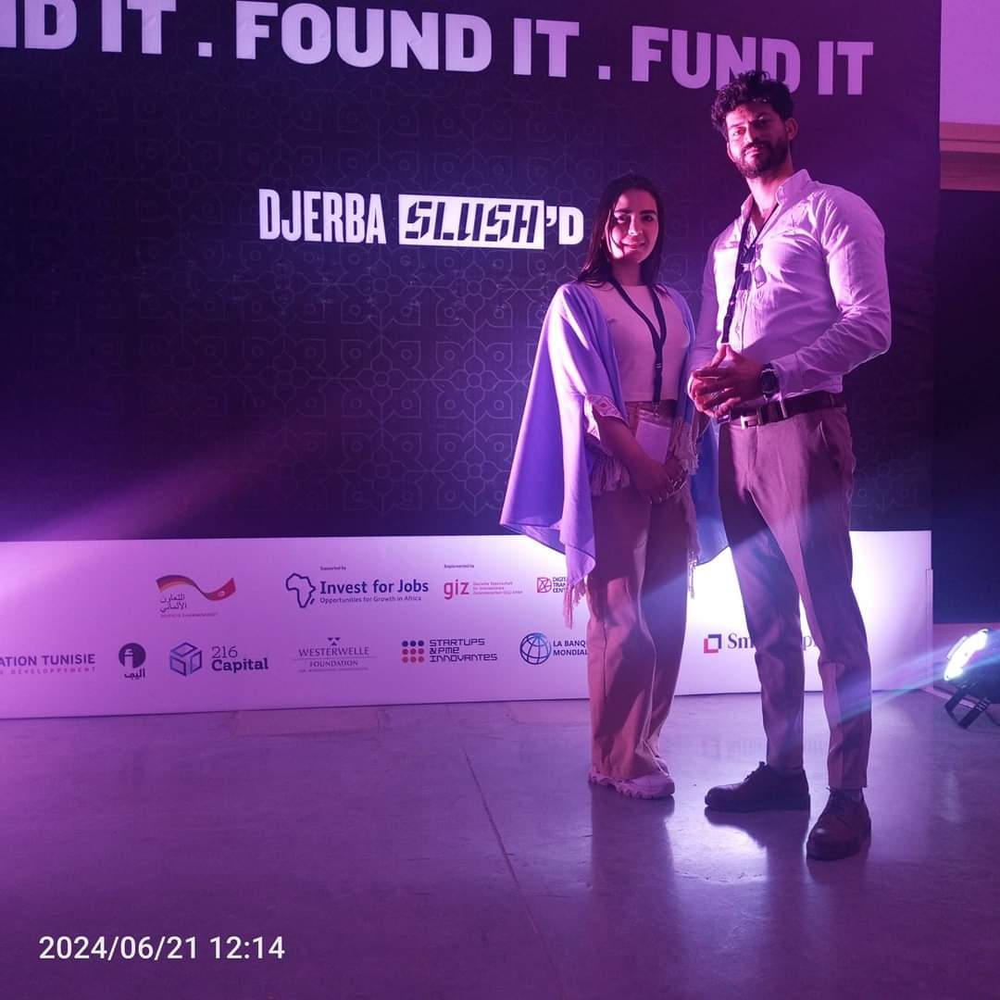
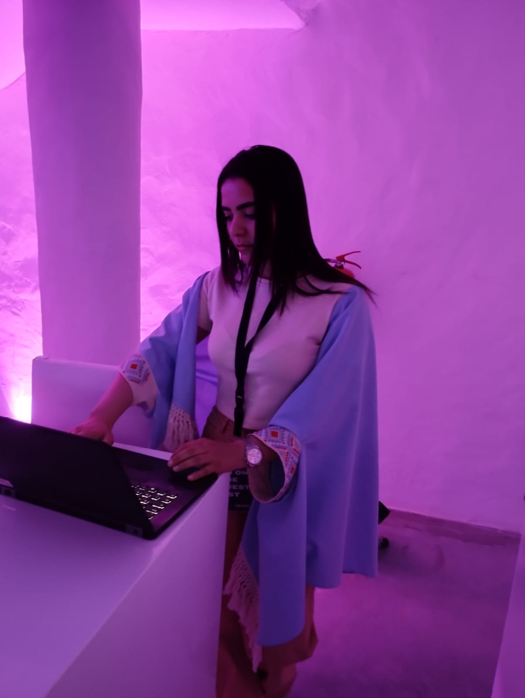
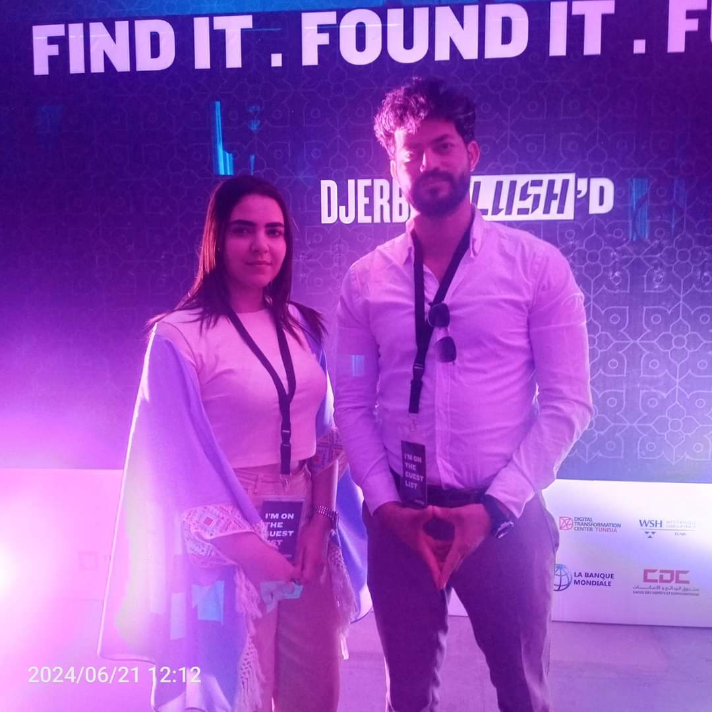
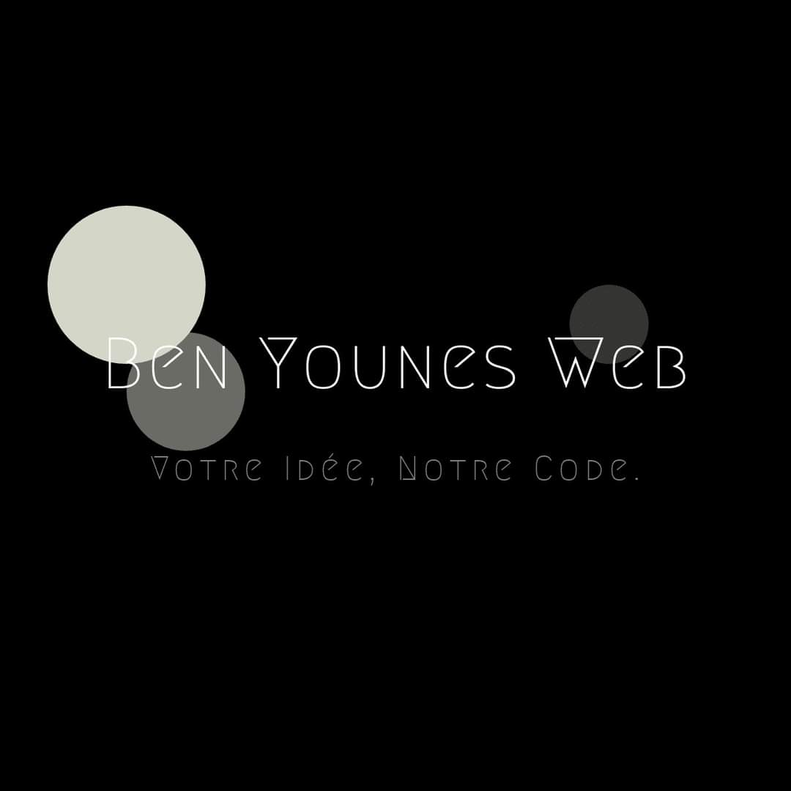
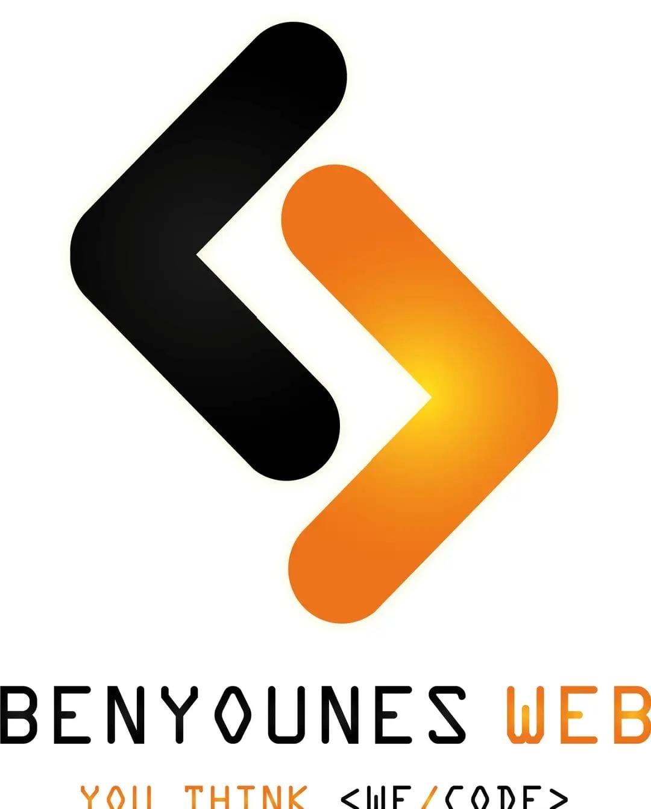
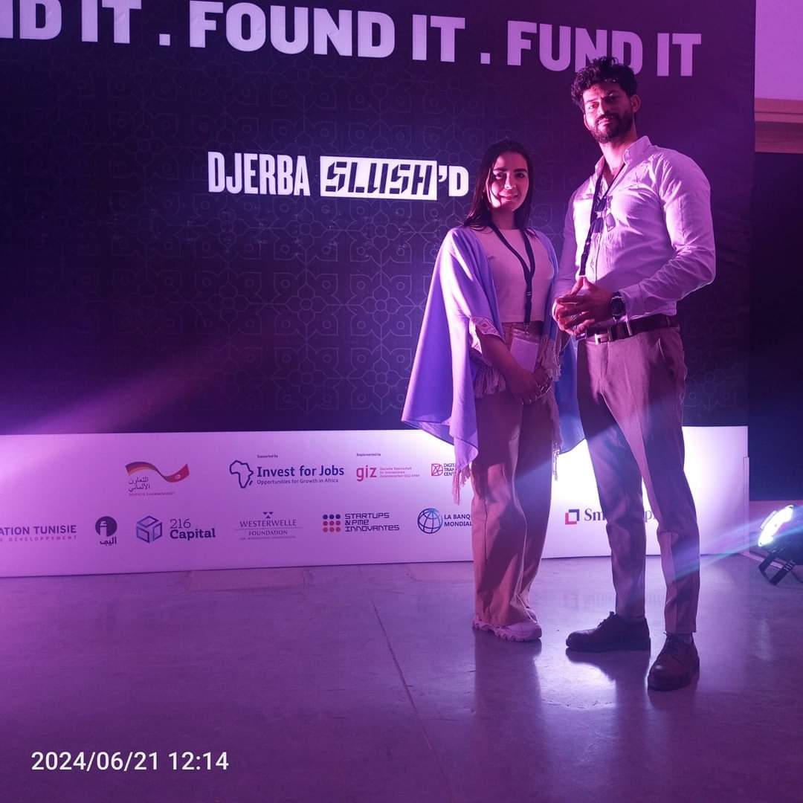
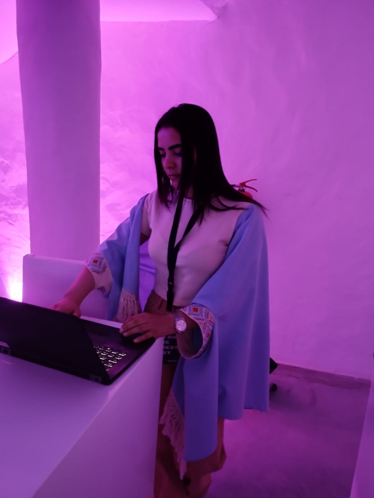
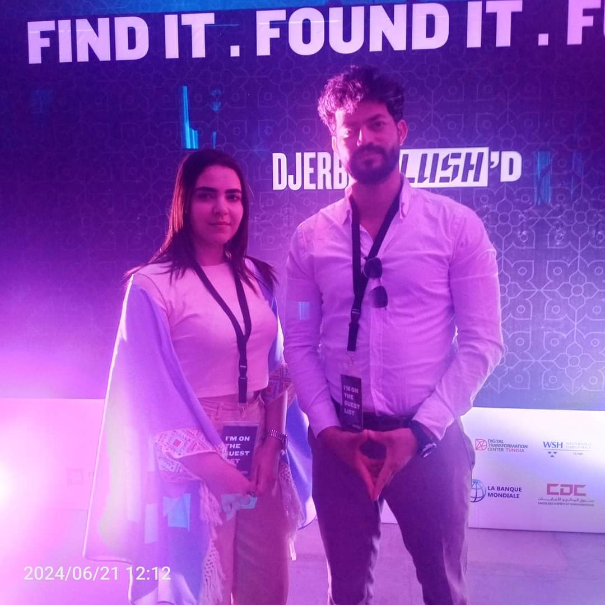
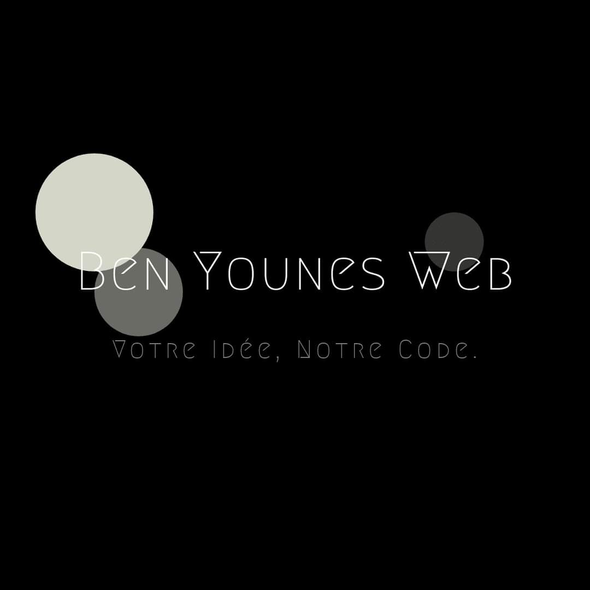

Pour mon stage de projet de fin d’études, j’ai eu l’opportunité de travailler au sein de la société Ben Younes Web, une entreprise reconnue pour sa créativité et sa discipline exemplaire. Ce stage m’a permis de plonger dans un environnement professionnel dynamique, où l’innovation est au cœur de chaque projet. Grâce à l’organisation rigoureuse de l’équipe et à leur capacité à proposer des solutions créatives, j’ai pu développer mes compétences techniques et personnelles tout en participant activement à des projets enrichissants. Cette expérience a été une étape marquante dans mon parcours, renforçant ma passion pour le domaine et mon envie de contribuer à des projets ambitieux.
 








